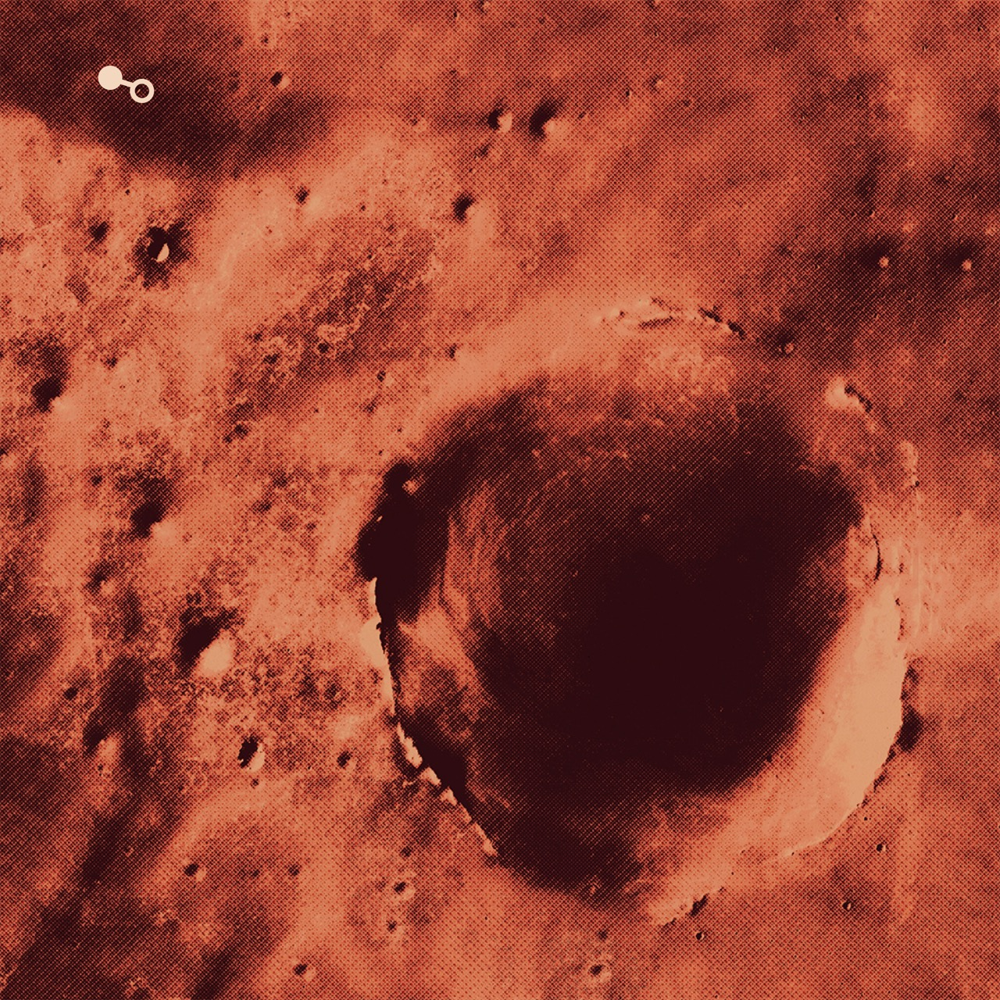
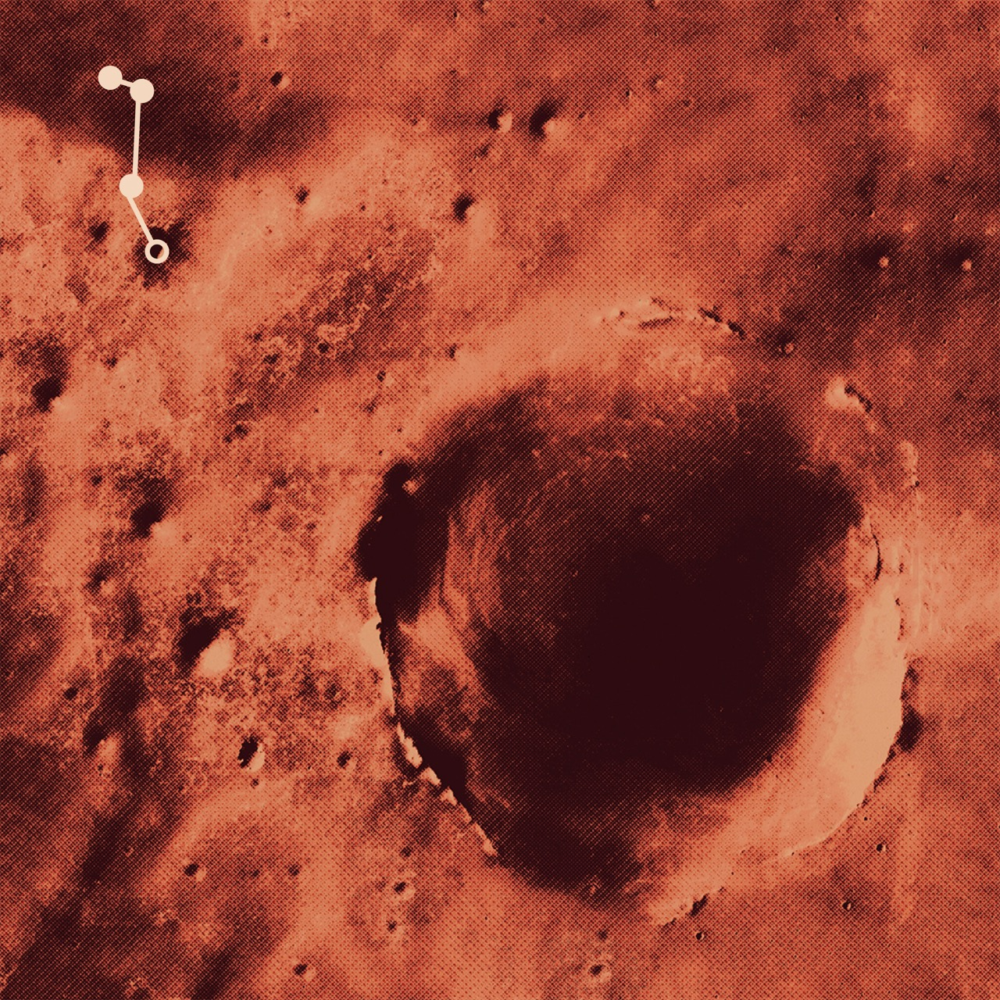
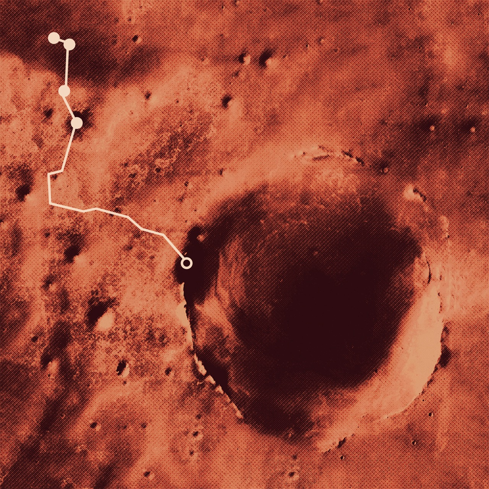

Welcome Traveler
Explore Mars and experience the journey of NASA’s Opportunity rover, who traveled 28 miles across the planet's surface.
The Rover
2003–19
Rover
2003–2019

Arrival
2003–04
Arrival
2003–04
Jul. 7, 2003
Opportunity launched from Earth
towards the planet Mars.
Jan. 24, 2004
Opportunity made first contact
with Mars’ surface.
Eagle Crater
2004
Eagle
2004
Learn More
Opportunity began her journey on January 25, 2004 when she landed in Eagle Crater: a small, 22 meter-long crater within the Meridiani Planum plain of Mars that is theorized to have once been a lake.
Endurance Crater
2005
Endurance
2005
Learn More
After she had explored Eagle Crater, the rover's team sent Opportunity to Endurance Crater where she began to learn more about Mars’ rock structure.
A Bump in the Road
2005
Roadblock
2005
Learn More
Driving from Endurance Crater to Victoria Crater, Opportunity experienced some difficulty crossing the dunes of windblown material.
At one point, the rover got stuck and the team had to problem solve to help it escape.
They ended up discovering that the best solution was just to put it in reverse and speed up.
Victoria Crater
2007–08
Victoria
2007–2008
Learn More
After a long two and a half years of travel, Opportunity arrived at Victoria Crater. Upon arrival, the team then had to spend time analyzing the edge of the crater to find the best entry point.
Endeavour Crater
2012–18
Endeavour
2012–2018
Learn More
After leaving Victoria, Opportunity traveled three years before finally arriving at Endeavour Crater. Here, the rover spent the final six years of her life.
The End
2019
The End
2019
Learn More

Designed and coded by Lauren Elise Nickels
Mission Objective:
proof of water on mars
Opportunity was one of a twin set of rovers—Spirit and Opportunity—who landed on Mars in 2004. Their goal was to analyze the formation of rocks and terrain on Mars in search of previous existence of water on the planet.
Opportunity’s original mission was supposed to last around 90 sols (Martian days), but she surpassed that original goal and ended up journeying on for 15 years.
Scroll down or use the tabs in the bottom left corner to navigate.

Use the dropdowns to learn more about Opportunity's location.
Click the magnify icons to learn more about the rover's discoveries.